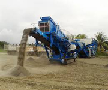

portable crusher station in the construction waste disposal market
To deal with construction waste, all have their own policies and measures. Construction of a plurality of construction waste disposal field, in order to meet the increasing construction waste is difficult to deal with the situation. And to buy large construction waste treatment equipment - portable crusherstation. The portable crushing station after the processing of construction waste, can be recycled construction materials, not only solve the processing problem of construction waste, and a new generation of materials.
Construction waste disposal field to promote new construction waste recycling, recycling processing mode, the disposal of construction waste into a sweet pastry industry. Through the introduction of construction waste disposal equipment of large -- portable crushing station for construction garbage classification processing.
Clay brick, building garbage in reinforced concrete, garbage can be effectively treated by mobile crusher station, and then through the screening process, to achieve the aim of classification. Product aggregate after classification, up to a certain fineness requirements, can be re made of regenerated concrete aggregate or brick, but also as a filling roadbed aggregate is a good use of.
At present, the global annual production of waste has reached nearly 5 tons, the city the amount of waste generated increasing, also caused the accumulation has been growing, if successful use of construction waste crushing recycling industry, will make a major contribution to our social development.